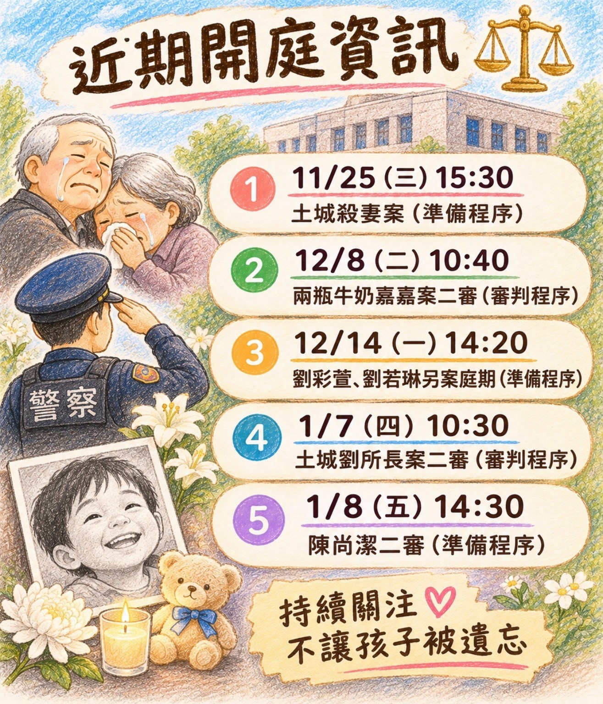

1
土城杀妻案｜准备程序
博爱路127号｜第12法庭
高院115年度国审上重诉字第10号PUBLIC HEARING UPDATE · 2026.11.13
以下汇整近期数起案件的公开开庭信息，包括准备程序及审判程序。请有意旁听的朋友，留意开庭时间及法庭信息。

庭期、法庭、旁听名额与入场规定均可能变动；请以法院最新公告、现场公告及相关规定为准。
博爱路127号｜第12法庭
高院115年度国审上重诉字第10号博爱路127号｜第15法庭
高院115年度国审上诉字第6号台北地院博爱路131号｜第19法庭
台北地院114年度诉字第443号博爱路127号｜专一法庭
高院115年度国审交上诉字第4号博爱路127号｜专一法庭
高院115年度上诉字第4688号即使无法亲自到场，也希望大家持续关注后续审理进度。